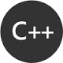
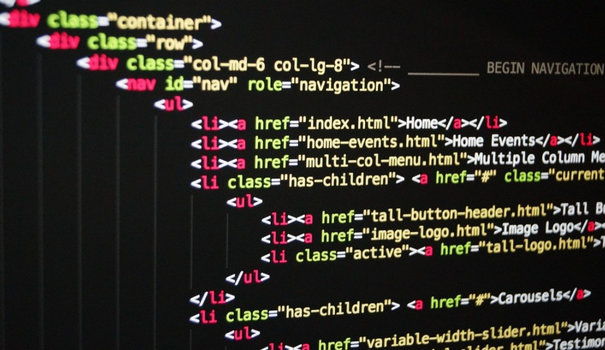

Programowanie
Programowanie komputerów – proces projektowania, tworzenia, testowania i utrzymywania kodu źródłowego programów komputerowych lub urządzeń mikroprocesorowych (mikrokontrolery). Kod źródłowy jest napisany w języku programowania, z użyciem określonych reguł, może on być modyfikacją istniejącego programu lub czymś zupełnie nowym. Programowanie wymaga dużej wiedzy i doświadczenia w wielu różnych dziedzinach, jak projektowanie aplikacji, algorytmika, struktury danych, języki programowania i narzędzia programistyczne, kompilatory, czy sposób działania podzespołów komputera. W inżynierii oprogramowania programowanie (implementacja) jest tylko jednym z etapów powstawania programu.

Najnowsze wpisy
Poniżej znajdziesz trzy ostatnio opublikowane artykuły - dzięki temu łatwo można sprawdzić, czy na blogu pojawiło się coś nowego. Wpisy zazwyczaj pojawiają się we wtorki i piątki, o nowościach informuję także na swoim Twitterze.


Kontakt z autorem
Jeśli masz ochotę podyskutować, zaproponować temat wpisu lub nawiązać współpracę reklamową - zapraszam do kontaktu mailowego, proszę jednak o wyrozumiałość co do czasu udzielenia przeze mnie odpowiedzi.